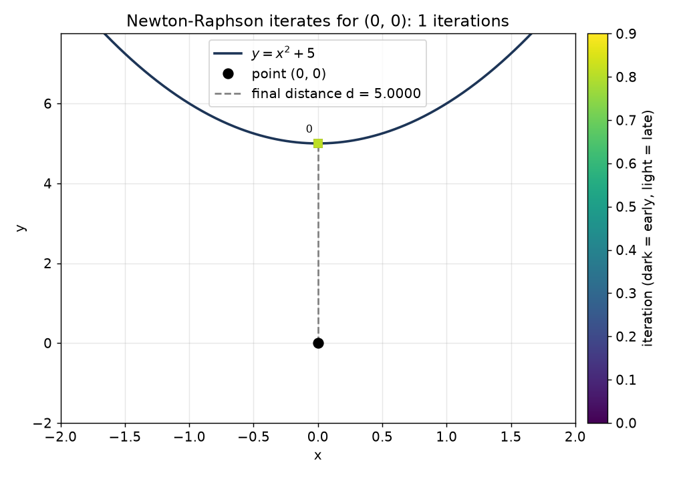
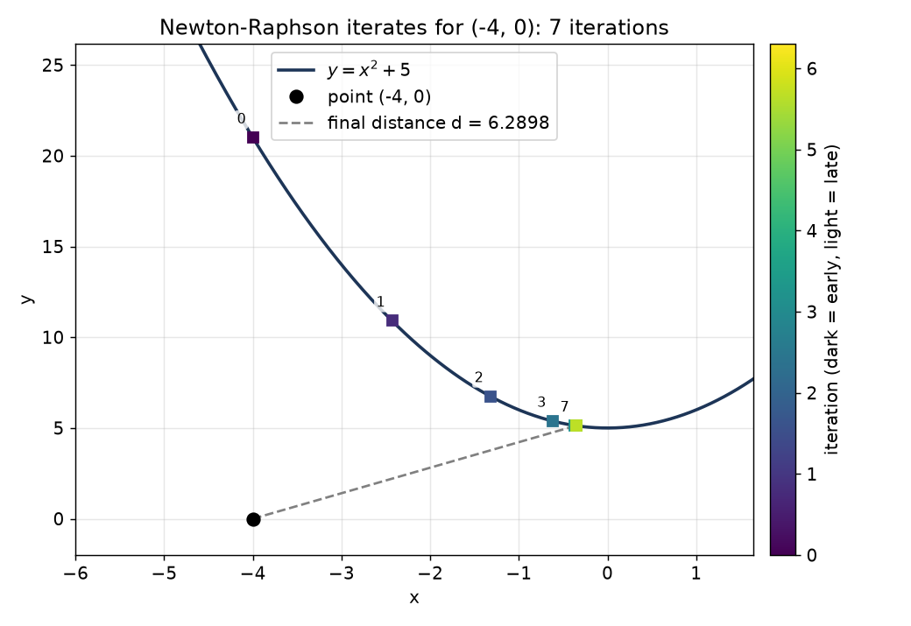
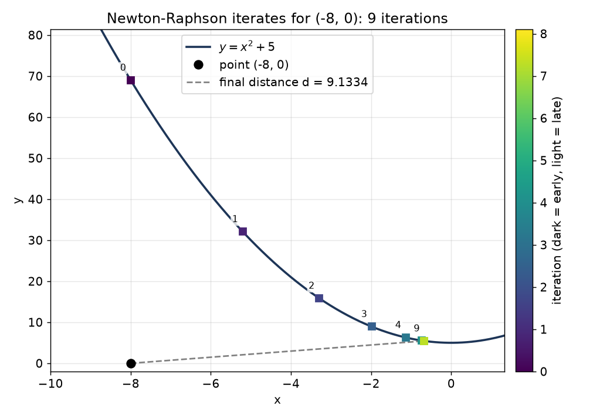
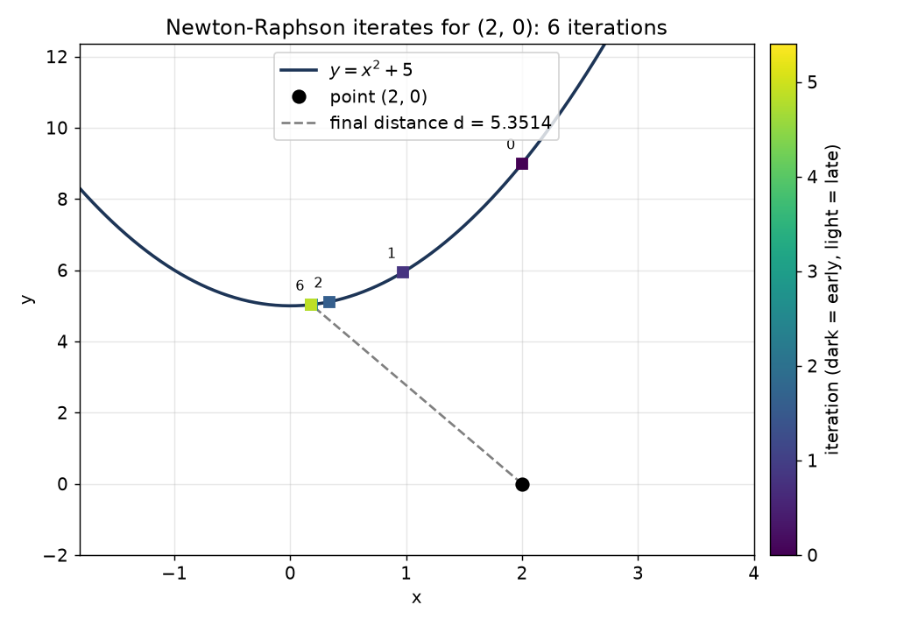
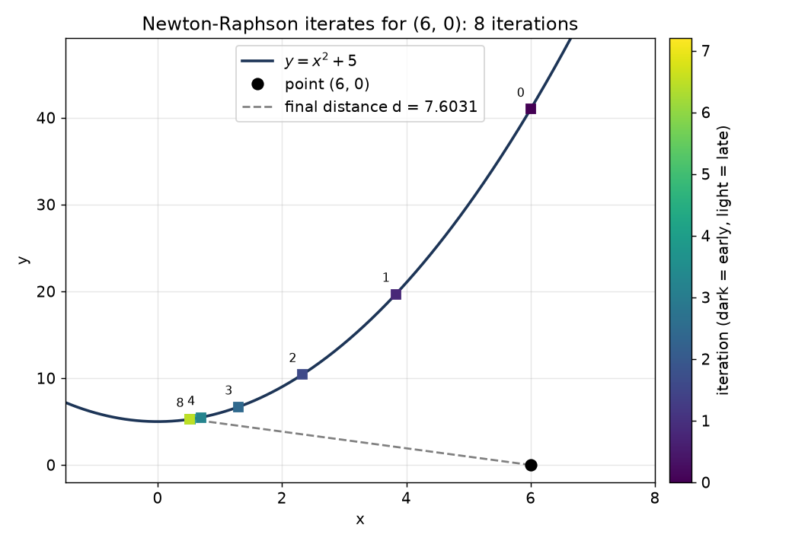
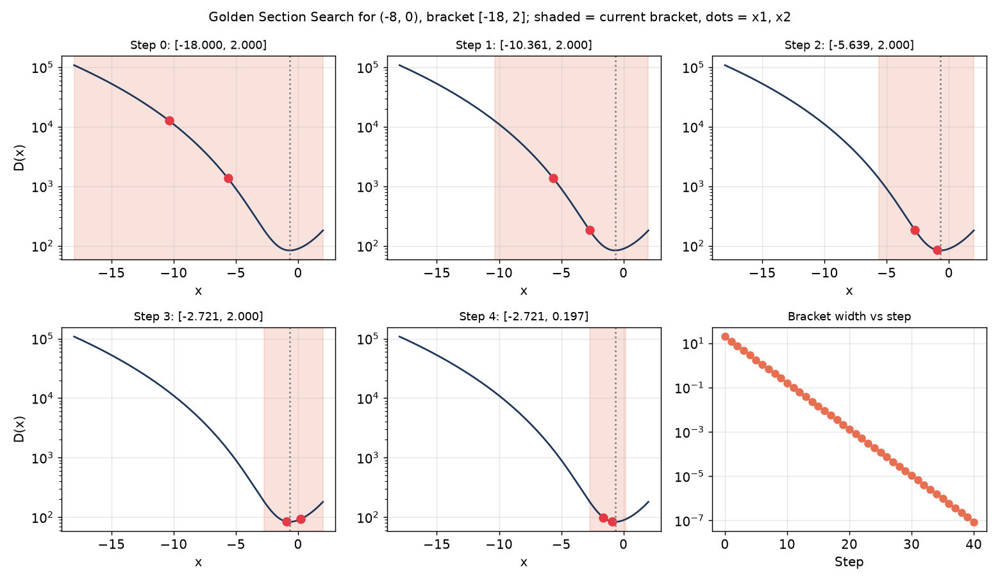
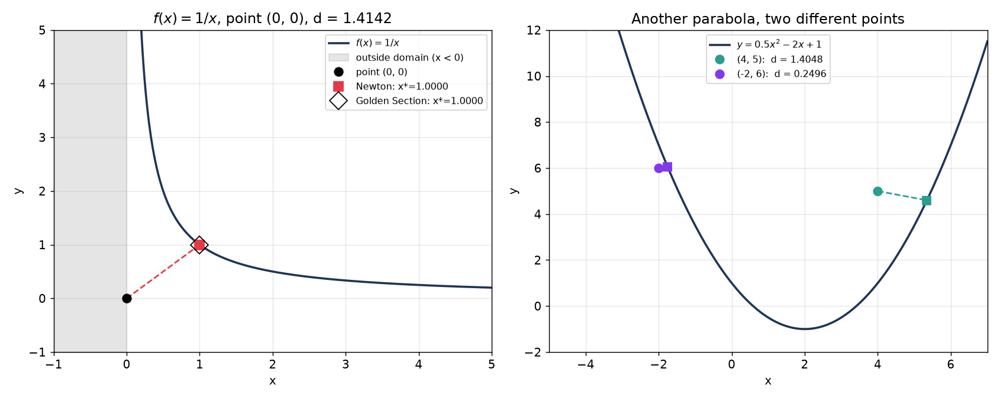

SYDE 572 · Introduction to Pattern Recognition
Point-to-curve distance and curve fitting
The squared distance from a point \((x_0,y_0)\) to a curve \(y=f(x)\) is:
\[ D(x) = (x-x_0)^2 + (f(x)-y_0)^2 \]
We're using \(f(x) = x^2+5\) and 5 points: (0,0), (-4,0), (-8,0), (2,0), (6,0).
For f(x) = x²+5 and a point (x0, 0), the squared distance and its derivatives are:
\[ D(x) = (x-x_0)^2 + (x^2+5)^2 \]
\[ D'(x) = 2(x-x_0) + 2(x^2+5)(2x) = 4x^3 + 22x - 2x_0 \]
\[ D''(x) = 12x^2 + 22 \]
D''(x) is positive for every x, so D is convex. That means D'(x) = 0 has exactly one solution and it is the global minimum, so there are no other critical points to check.
Solving the cubic with Cardano's formula. Divide D'(x) = 0 by 4:
\[ x^3 + \tfrac{11}{2}x - \tfrac{x_0}{2} = 0 \]
There is no x² term, so this is already in the form x³ + px + q = 0 with p = 11/2 and q = -x0/2. The discriminant is:
\[ \Delta = \left(\tfrac{q}{2}\right)^2 + \left(\tfrac{p}{3}\right)^3 = \tfrac{x_0^2}{16} + \tfrac{1331}{216} \]
Δ is positive for every x0, so there is exactly one real root (this agrees with the convexity argument), and Cardano gives it directly:
\[ x^* = \sqrt[3]{\tfrac{x_0}{4} + \sqrt{\Delta}} + \sqrt[3]{\tfrac{x_0}{4} - \sqrt{\Delta}} \]
Then y* = x*² + 5 and the distance is d = √((x* - x0)² + y*²).
Worked example, point (-8, 0). Here x0/4 = -2 and Δ = 64/16 + 1331/216 = 10.1620, so √Δ = 3.1878.
\( x^* = \sqrt[3]{-2+3.1878} + \sqrt[3]{-2-3.1878} = 1.0591 - 1.7312 = -0.6721 \)
\( y^* = (-0.6721)^2 + 5 = 5.4517 \), and \( d = \sqrt{(-0.6721+8)^2 + 5.4517^2} = \sqrt{53.70 + 29.72} = 9.133 \)
Point (0, 0). The cubic factors, since D'(x) = x(4x²+22) and 4x²+22 is always positive. So x* = 0, the closest point is (0, 5) and d = 5.
The same formula was applied to the other three points. I also checked all five against sympy's solver in the code and they agree:
| Point | x* on curve | y* | distance |
|---|---|---|---|
| (0, 0) | 0.000000 | 5.000000 | 5.000000 |
| (-4, 0) | -0.355470 | 5.126359 | 6.289845 |
| (-8, 0) | -0.672078 | 5.451689 | 9.133420 |
| (2, 0) | 0.180745 | 5.032669 | 5.351396 |
| (6, 0) | 0.519904 | 5.270300 | 7.603125 |
Newton's method applied to D'(x) = 0:
\[ x_{k+1} = x_k - \frac{D'(x_k)}{D''(x_k)} = x_k - \frac{4x_k^3 + 22x_k - 2x_0}{12x_k^2 + 22} \]
| Point | Iterations | Newton x* | Newton d | Analytical d |
|---|---|---|---|---|
| (0, 0) | 1 | 0.0000000 | 5.000000 | 5.000000 |
| (-4, 0) | 7 | -0.3554697 | 6.289845 | 6.289845 |
| (-8, 0) | 9 | -0.6720781 | 9.133420 | 9.133420 |
| (2, 0) | 6 | 0.1807446 | 5.351396 | 5.351396 |
| (6, 0) | 8 | 0.5199037 | 7.603125 | 7.603125 |
Newton matches the analytical distance to all six decimals for every point. (0, 0) takes only 1 iteration because the starting guess x = 0 already satisfies D'(0) = 0, so the step size is zero and the loop stops immediately. The other points start further from the answer and take 6 to 9 iterations; (-8, 0) is the slowest because it starts furthest away.

Each iterate is drawn on the parabola below (square markers, darker = earlier). Iterate 0 is the starting guess and the dashed line is the final distance.





Golden Section Search needs no derivatives. It only compares values of D(x) at two interior points of a bracket [a, b] that contains the minimum. With r = 2 - φ = 0.381966:
\[ x_1 = a + r(b-a), \qquad x_2 = b - r(b-a) \]
Every iteration keeps 61.8% of the bracket, so the width goes 20, 12.36, 7.64, 4.72, 2.92, and so on. The first five steps for (-8, 0) are below. Each panel shows D(x) (log scale), the current bracket shaded, and the two interior points as dots. The last panel shows the bracket width against the step number, which is a straight line on the log axis.

| Point | Bracket | Iterations | Golden x* | Golden d | Analytical d |
|---|---|---|---|---|---|
| (0, 0) | [-10, 10] | 40 | 0.0000000 | 5.000000 | 5.000000 |
| (-4, 0) | [-14, 6] | 40 | -0.3554697 | 6.289845 | 6.289845 |
| (-8, 0) | [-18, 2] | 40 | -0.6720781 | 9.133420 | 9.133420 |
| (2, 0) | [-8, 12] | 40 | 0.1807446 | 5.351396 | 5.351396 |
| (6, 0) | [-4, 16] | 40 | 0.5199037 | 7.603125 | 7.603125 |
All five points take exactly 40 iterations. That is because the bracket is always 20 wide and shrinks by the same factor every step, so it reaches the 10-7 tolerance after the same number of steps wherever the point is. Newton's count depends on the starting distance from the answer; Golden Section's does not.
| Point | Analytical d | Newton d (iters) | Golden Section d (iters) |
|---|---|---|---|
| (0, 0) | 5.000000 | 5.000000 (1) | 5.000000 (40) |
| (-4, 0) | 6.289845 | 6.289845 (7) | 6.289845 (40) |
| (-8, 0) | 9.133420 | 9.133420 (9) | 9.133420 (40) |
| (2, 0) | 5.351396 | 5.351396 (6) | 5.351396 (40) |
| (6, 0) | 7.603125 | 7.603125 (8) | 7.603125 (40) |
All three methods agree to six decimals for every point. Newton needs 1 to 9 iterations but needs f, f' and f''. Golden Section needs about four times as many iterations but only needs f and a bracket.
The two numerical routines take f (and f', f'' for Newton) as inputs, so switching function just means passing different functions. The polynomial structure is never used. Below are ex, ln x and √x, each with both methods.

| Function | Point | Newton guess | Golden bracket | Newton x* | Golden x* | d (both) |
|---|---|---|---|---|---|---|
| ex | (2, 0) | 0 | [-5, 5] | 0.273150 | 0.273150 | 2.169991 |
| ln x | (3, 0) | 1 | [0.001, 10] | 2.632315 | 2.632315 | 1.035351 |
| √x | (4, 0) | 1 | [0.001, 10] | 3.500000 | 3.500000 | 1.936492 |
Domain. ln x and √x are only defined for x > 0. A Newton step can overshoot to a negative x and produce nan, so both start inside the domain at x = 1. Golden Section can never leave its bracket, so the bracket starts just above 0 at 0.001. The √x answer can be checked by hand: D'(x) = 0 gives x = 3.5, so d = √(0.25 + 3.5) = 1.936492, which matches.
To check that the routines are not tied to the given parabola, here are two more tests: a function with a variable in the denominator, and a different parabola with two different points.

f(x) = 1/x, point (0, 0). Only the right branch (x > 0) is searched, since f is undefined at 0 and the left branch is a mirror image. Newton starts at x = 1.5 and Golden Section uses the bracket [0.1, 5]. This one can be done by hand: D(x) = x² + 1/x², so D'(x) = 2x - 2/x³ = 0 gives x⁴ = 1, so x* = 1 and d = √2.
| Method | x* | d |
|---|---|---|
| Exact (by hand) | 1.000000 | 1.414214 |
| Newton-Raphson | 1.000000 | 1.414214 |
| Golden Section | 1.000000 | 1.414214 |
y = 0.5x² - 2x + 1. For this parabola D'(x) = 0 is again a cubic, so the analytical column is found by solving that cubic and keeping the real root that gives the smallest distance. Newton starts at the point's x-coordinate and Golden Section uses x0 ± 10, same as before.
| Point | Analytical d | Newton d (x*) | Golden Section d (x*) |
|---|---|---|---|
| (4, 5) | 1.404790 | 1.404790 (5.345963) | 1.404790 (5.345963) |
| (-2, 6) | 0.249621 | 0.249621 (-1.758770) | 0.249621 (-1.758770) |
All three methods agree for every case, so the code works for any parabola and for non-polynomial functions, including ones where the domain is restricted.
Data points: (0, 0.5), (1, 1.5), (2, 3.5), (3, 7.5). We fit a line y = mx + b and a parabola y = ax² + bx + c by minimizing the mean squared error:
\[ \text{MSE} = \frac{1}{N}\sum_{i=1}^{N} \left(\hat{y}(x_i) - y_i\right)^2, \qquad N = 4 \]
Sums from the data, used in every equation below: Σx = 6, Σx² = 14, Σx³ = 36, Σx⁴ = 98, Σy = 13, Σxy = 31, Σx²y = 83.
\[ \text{MSE}(m,b) = \tfrac{1}{4}\sum (m x_i + b - y_i)^2 \]
\[ \frac{\partial \text{MSE}}{\partial m} = \tfrac{1}{2}\sum (m x_i + b - y_i)\,x_i = \tfrac{1}{2}\left(14m + 6b - 31\right) \]
\[ \frac{\partial \text{MSE}}{\partial b} = \tfrac{1}{2}\sum (m x_i + b - y_i) = \tfrac{1}{2}\left(6m + 4b - 13\right) \]
Setting both to zero gives the normal equations:
\[ 14m + 6b = 31, \qquad 6m + 4b = 13 \]
Multiply the first by 2 and the second by 3 so the b terms match (28m + 12b = 62 and 18m + 12b = 39). Subtracting gives 10m = 23, so m = 2.3, and then b = (13 - 13.8)/4 = -0.2.
Residuals are -0.7, 0.6, 0.9, -0.8, so the squared errors add to 2.30 and MSE = 2.30/4 = 0.575.
\[ \text{MSE}(a,b,c) = \tfrac{1}{4}\sum (a x_i^2 + b x_i + c - y_i)^2 \]
\[ \frac{\partial \text{MSE}}{\partial a} = \tfrac{1}{2}\left(98a + 36b + 14c - 83\right) \]
\[ \frac{\partial \text{MSE}}{\partial b} = \tfrac{1}{2}\left(36a + 14b + 6c - 31\right) \]
\[ \frac{\partial \text{MSE}}{\partial c} = \tfrac{1}{2}\left(14a + 6b + 4c - 13\right) \]
Setting all three to zero gives three normal equations:
\[ 98a + 36b + 14c = 83, \quad 36a + 14b + 6c = 31, \quad 14a + 6b + 4c = 13 \]
Solving this 3×3 system (by hand in the attached calculations, and with sympy in the code) gives a = 0.75, b = 0.05, c = 0.55. Check: 98(0.75) + 36(0.05) + 14(0.55) = 73.5 + 1.8 + 7.7 = 83, and the other two equations also check out. The residuals are 0.05, -0.15, 0.15, -0.05, so MSE = 0.05/4 = 0.0125.
| Model | Parameters | MSE |
|---|---|---|
| Line | m = 2.3, b = -0.2 | 0.575 |
| Parabola | a = 0.75, b = 0.05, c = 0.55 | 0.0125 |
The parabola fits much better (MSE is 46 times smaller), which makes sense because the data curve upward.
As the assignment describes, we optimize one parameter while the others are held fixed, then move to the next parameter, and repeat. Each one-parameter step is a Newton step, x ← x - (first derivative)/(second derivative), using the derivatives above. One sweep means one Newton step for every parameter (2 steps for the line, 3 for the parabola). Everything starts from 0.
Line (second derivatives are 7 for m and 2 for b):
\[ m \leftarrow m - \frac{14m + 6b - 31}{14}, \qquad b \leftarrow b - \frac{6m + 4b - 13}{4} \]
Parabola (second derivatives are 49, 7 and 2):
\[ a \leftarrow a - \frac{98a + 36b + 14c - 83}{98}, \quad b \leftarrow b - \frac{36a + 14b + 6c - 31}{14}, \quad c \leftarrow c - \frac{14a + 6b + 4c - 13}{4} \]
First sweep for the line, by hand: m = 0 - (0 + 0 - 31)/14 = 2.2143, then b = 0 - (6(2.2143) + 0 - 13)/4 = -0.0714, which gives MSE = 0.5842.
| Sweep | Line m | Line b | Line MSE | Parabola a | Parabola b | Parabola c | Parabola MSE |
|---|---|---|---|---|---|---|---|
| 0 | 0 | 0 | 17.750000 | 0 | 0 | 0 | 17.750000 |
| 1 | 2.214286 | -0.071429 | 0.584184 | 0.846939 | 0.036443 | 0.231050 | 0.117988 |
| 2 | 2.244898 | -0.117347 | 0.578795 | 0.800544 | 0.056722 | 0.363012 | 0.046400 |
| 3 | 2.264577 | -0.146866 | 0.576568 | 0.774243 | 0.067798 | 0.438452 | 0.023332 |
| final | 2.300000 | -0.200000 | 0.575000 | 0.750000 | 0.050000 | 0.550000 | 0.012500 |
| analytical | 2.3 | -0.2 | 0.575 | 0.75 | 0.05 | 0.55 | 0.0125 |
| Line | Parabola | |
|---|---|---|
| Sweeps until MSE is within 10-6 of the minimum | 12 | 74 |
| Sweeps until every parameter changes by less than 10-8 | 37 | 342 |
| Largest parameter error vs analytical answer | 1.6×10-8 | 2.8×10-7 |
Run to convergence, the numerical method reaches the analytical values for both fits (same MSE, 0.575 and 0.0125). The parabola takes many more sweeps than the line. A Newton step is exact for a quadratic, so each one-parameter step finds the best value of that one parameter, but the best value shifts again as soon as the other parameters move. For the parabola the columns x², x and 1 are strongly correlated on this data, so each step undoes part of the previous one and progress is slow. Updating all parameters together (full multivariate Newton) would solve either fit in a single step; the one-at-a-time version is what the assignment asks for.


The worked-out solutions by hand for Part 1 (analytical, Newton-Raphson and Golden Section) and Part 2 (line and parabola, analytical and numerical) are in one PDF:
Open the hand calculations (PDF)
All scripts are in this folder. Each is run from inside the folder (python3 script_name.py) and needs numpy, sympy and matplotlib.
| File | What it does |
|---|---|
| point_to_curve.py | The two numerical routines: find_distance_newton and golden_section_search. Both take any f (and f', f'' for Newton). |
| part1_solve_and_plot.py | Part 1 analytical solution with sympy, numerical results, first versions of the Part 1 plots |
| part1_iterations.py | Newton convergence plot and the 5-panel Golden Section figure |
| part1_newton_all.py | One Newton iteration figure per point |
| part1_extras.py | Overview plot and the ex, ln x, √x comparison |
| part1_more.py | The 1/x example and the second parabola |
| part2_fit_and_plot.py | Part 2 analytical fits with sympy, coordinate-wise Newton-Raphson, and the two Part 2 plots |
| part2_convergence.py | Runs the same Part 2 updates until they converge and reports the sweep counts above |
Run order for Part 1: run part1_solve_and_plot.py first, then the other part1 scripts. The first script also saves early versions of a few figures under the same file names, and the later scripts replace them with the final versions used on this page.
w = np.zeros(A.shape[1]) # all parameters start at 0
for sweep in range(max_sweeps):
w_old = w.copy()
for j in range(A.shape[1]): # one Newton step per parameter
r = A @ w - Y
g = (2 / n) * A[:, j] @ r # first derivative of MSE
h = (2 / n) * A[:, j] @ A[:, j] # second derivative of MSE
w[j] -= g / h
if np.max(np.abs(w - w_old)) < tol:
breakHere the columns of A are [x, 1] for the line and [x², x, 1] for the parabola.
Larissa Rudenko - Fall 2026